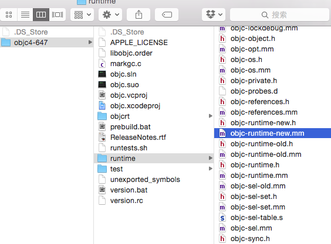
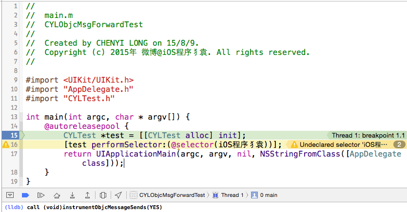
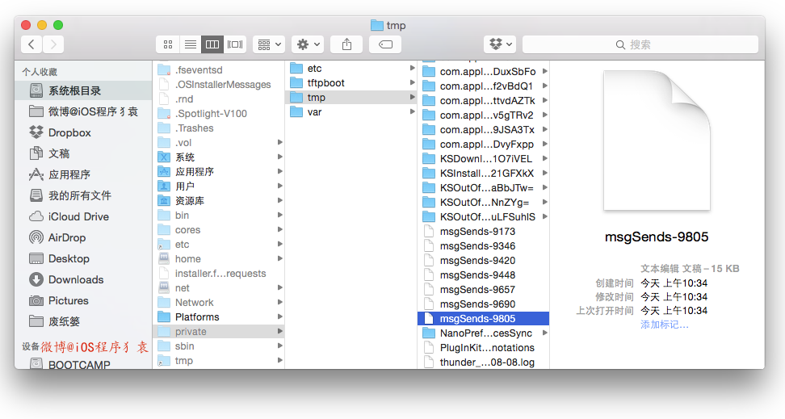
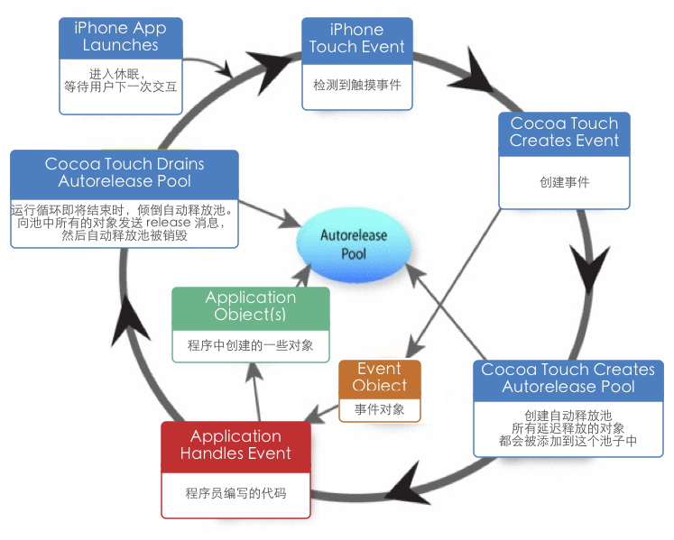
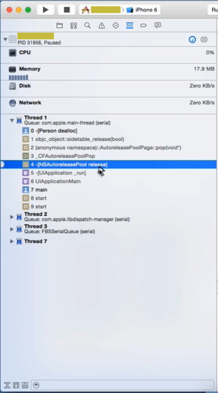
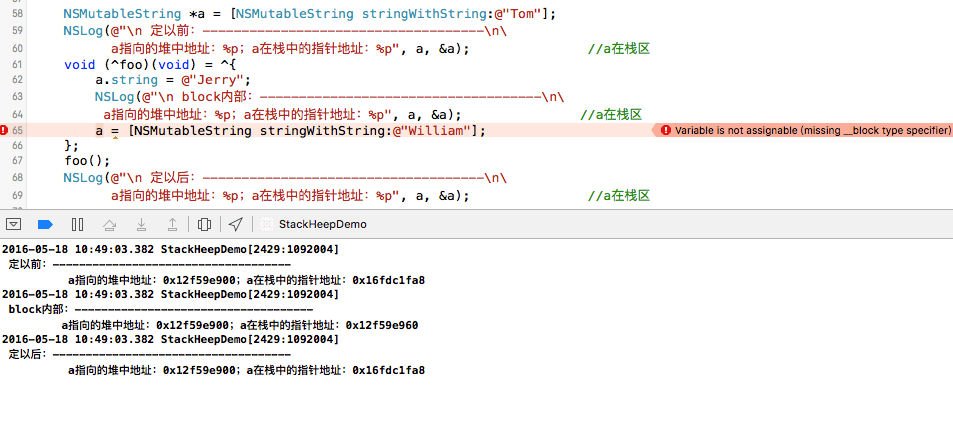
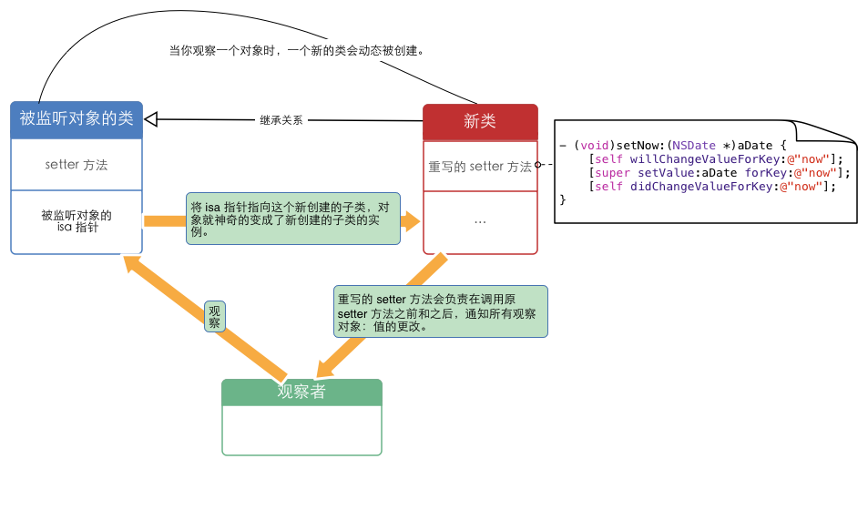
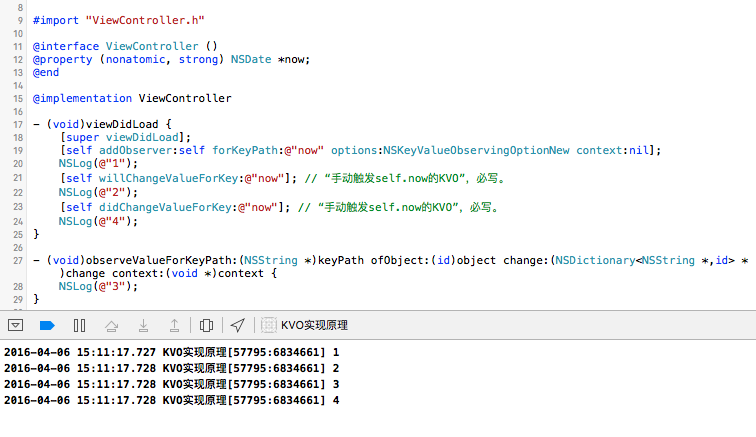
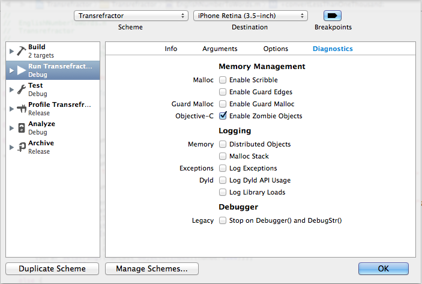
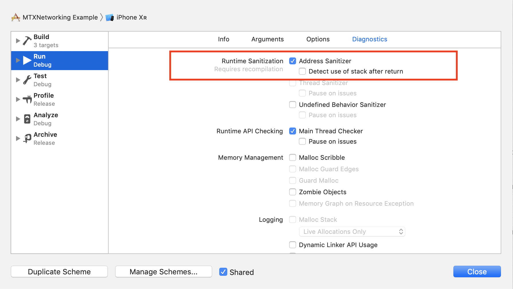

索引
- 25.
_objc_msgForward函数是做什么的，直接调用它将会发生什么？ - 26. runtime如何实现weak变量的自动置nil？
- 27. 能否向编译后得到的类中增加实例变量？能否向运行时创建的类中添加实例变量？为什么？
- 28. runloop和线程有什么关系？
- 29. runloop的mode作用是什么？
- 30. 以+ scheduledTimerWithTimeInterval...的方式触发的timer，在滑动页面上的列表时，timer会暂定回调，为什么？如何解决？
- 31. 猜想runloop内部是如何实现的？
- 32. objc使用什么机制管理对象内存？
- 33. ARC通过什么方式帮助开发者管理内存？
- 34. 不手动指定autoreleasepool的前提下，一个autorealese对象在什么时刻释放？（比如在一个vc的viewDidLoad中创建）
- 35. BAD_ACCESS在什么情况下出现？
- 36. 苹果是如何实现autoreleasepool的？
- 37. 使用block时什么情况会发生引用循环，如何解决？
- 38. 在block内如何修改block外部变量？
- 39. 使用系统的某些block api（如UIView的block版本写动画时），是否也考虑引用循环问题？
- 40. GCD的队列（dispatch_queue_t）分哪两种类型？
- 41. 如何用GCD同步若干个异步调用？（如根据若干个url异步加载多张图片，然后在都下载完成后合成一张整图）
- 42. dispatch_barrier_async的作用是什么？
- 43. 苹果为什么要废弃dispatch_get_current_queue？
-
- (void)viewDidLoad { [super viewDidLoad]; NSLog(@"1"); dispatch_sync(dispatch_get_main_queue(), ^{ NSLog(@"2"); }); NSLog(@"3"); } 45. addObserver:forKeyPath:options:context:各个参数的作用分别是什么，observer中需要实现哪个方法才能获得KVO回调？
- 46. 如何手动触发一个value的KVO
- 47. 若一个类有实例变量 NSString *_foo ，调用setValue:forKey:时，可以以foo还是 _foo 作为key？
- 48. KVC的keyPath中的集合运算符如何使用？
- 49. KVC和KVO的keyPath一定是属性么？
- 50. 如何关闭默认的KVO的默认实现，并进入自定义的KVO实现？
- 51. apple用什么方式实现对一个对象的KVO？
- 52. IBOutlet连出来的视图属性为什么可以被设置成weak?
- 53. IB中User Defined Runtime Attributes如何使用？
- 54. 如何调试BAD_ACCESS错误
- 55. lldb（gdb）常用的调试命令？
25. _objc_msgForward函数是做什么的，直接调用它将会发生什么？
_objc_msgForward是 IMP 类型，用于消息转发的：当向一个对象发送一条消息，但它并没有实现的时候，_objc_msgForward会尝试做消息转发。
我们可以这样创建一个_objc_msgForward对象：
IMP msgForwardIMP = _objc_msgForward;
在上篇中的《objc中向一个对象发送消息[obj foo]和objc_msgSend()函数之间有什么关系？》曾提到objc_msgSend在“消息传递”中的作用。在“消息传递”过程中，objc_msgSend的动作比较清晰：首先在 Class 中的缓存查找 IMP （没缓存则初始化缓存），如果没找到，则向父类的 Class 查找。如果一直查找到根类仍旧没有实现，则用_objc_msgForward函数指针代替 IMP 。最后，执行这个 IMP 。
Objective-C运行时是开源的，所以我们可以看到它的实现。打开 Apple Open Source 里Mac代码里的obj包 下载一个最新版本，找到 objc-runtime-new.mm，进入之后搜索_objc_msgForward。

里面有对_objc_msgForward的功能解释：
/***********************************************************************
* lookUpImpOrForward.
* The standard IMP lookup.
* initialize==NO tries to avoid +initialize (but sometimes fails)
* cache==NO skips optimistic unlocked lookup (but uses cache elsewhere)
* Most callers should use initialize==YES and cache==YES.
* inst is an instance of cls or a subclass thereof, or nil if none is known.
* If cls is an un-initialized metaclass then a non-nil inst is faster.
* May return _objc_msgForward_impcache. IMPs destined for external use
* must be converted to _objc_msgForward or _objc_msgForward_stret.
* If you don't want forwarding at all, use lookUpImpOrNil() instead.
**********************************************************************/
对 objc-runtime-new.mm文件里与_objc_msgForward有关的三个函数使用伪代码展示下：
// objc-runtime-new.mm 文件里与 _objc_msgForward 有关的三个函数使用伪代码展示
// 同时，这也是 obj_msgSend 的实现过程
id objc_msgSend(id self, SEL op, ...) {
if (!self) return nil;
IMP imp = class_getMethodImplementation(self->isa, SEL op);
imp(self, op, ...); //调用这个函数，伪代码...
}
//查找IMP
IMP class_getMethodImplementation(Class cls, SEL sel) {
if (!cls || !sel) return nil;
IMP imp = lookUpImpOrNil(cls, sel);
if (!imp) return _objc_msgForward; //_objc_msgForward 用于消息转发
return imp;
}
IMP lookUpImpOrNil(Class cls, SEL sel) {
if (!cls->initialize()) {
_class_initialize(cls);
}
Class curClass = cls;
IMP imp = nil;
do { //先查缓存,缓存没有时重建,仍旧没有则向父类查询
if (!curClass) break;
if (!curClass->cache) fill_cache(cls, curClass);
imp = cache_getImp(curClass, sel);
if (imp) break;
} while (curClass = curClass->superclass);
return imp;
}
虽然Apple没有公开_objc_msgForward的实现源码，但是我们还是能得出结论：
_objc_msgForward是一个函数指针（和 IMP 的类型一样），是用于消息转发的：当向一个对象发送一条消息，但它并没有实现的时候，_objc_msgForward会尝试做消息转发。在上篇中的《objc中向一个对象发送消息
[obj foo]和objc_msgSend()函数之间有什么关系？》曾提到objc_msgSend在“消息传递”中的作用。在“消息传递”过程中，objc_msgSend的动作比较清晰：首先在 Class 中的缓存查找 IMP （没缓存则初始化缓存），如果没找到，则向父类的 Class 查找。如果一直查找到根类仍旧没有实现，则用_objc_msgForward函数指针代替 IMP 。最后，执行这个 IMP 。
为了展示消息转发的具体动作，这里尝试向一个对象发送一条错误的消息，并查看一下_objc_msgForward是如何进行转发的。
首先开启调试模式、打印出所有运行时发送的消息： 可以在代码里执行下面的方法：
(void)instrumentObjcMessageSends(YES);
或者断点暂停程序运行，并在 gdb 中输入下面的命令：
call (void)instrumentObjcMessageSends(YES)
以第二种为例，操作如下所示：

之后，运行时发送的所有消息都会打印到/tmp/msgSend-xxxx文件里了。
终端中输入命令前往：
open /private/tmp

可能看到有多条，找到最新生成的，双击打开
在模拟器上执行执行以下语句（这一套调试方案仅适用于模拟器，真机不可用，关于该调试方案的拓展链接： Can the messages sent to an object in Objective-C be monitored or printed out? ），向一个对象发送一条错误的消息：
//
// main.m
// CYLObjcMsgForwardTest
//
//
#import <UIKit/UIKit.h>
#import "AppDelegate.h"
#import "CYLTest.h"
int main(int argc, char * argv[]) {
@autoreleasepool {
CYLTest *test = [[CYLTest alloc] init];
[test performSelector:(@selector(undefinedMethodName))];
return UIApplicationMain(argc, argv, nil, NSStringFromClass([AppDelegate class]));
}
}
你可以在/tmp/msgSend-xxxx（我这一次是/tmp/msgSend-9805）文件里，看到打印出来：
+ CYLTest NSObject initialize
+ CYLTest NSObject alloc
- CYLTest NSObject init
- CYLTest NSObject performSelector:
+ CYLTest NSObject resolveInstanceMethod:
+ CYLTest NSObject resolveInstanceMethod:
- CYLTest NSObject forwardingTargetForSelector:
- CYLTest NSObject forwardingTargetForSelector:
- CYLTest NSObject methodSignatureForSelector:
- CYLTest NSObject methodSignatureForSelector:
- CYLTest NSObject class
- CYLTest NSObject doesNotRecognizeSelector:
- CYLTest NSObject doesNotRecognizeSelector:
- CYLTest NSObject class
结合《NSObject官方文档》，排除掉 NSObject 做的事，剩下的就是_objc_msgForward消息转发做的几件事：
调用
resolveInstanceMethod:方法 (或resolveClassMethod:)。允许用户在此时为该 Class 动态添加实现。如果有实现了，则调用并返回YES，那么重新开始objc_msgSend流程。这一次对象会响应这个选择器，一般是因为它已经调用过class_addMethod。如果仍没实现，继续下面的动作。调用
forwardingTargetForSelector:方法，尝试找到一个能响应该消息的对象。如果获取到，则直接把消息转发给它，返回非 nil 对象。否则返回 nil ，继续下面的动作。注意，这里不要返回 self ，否则会形成死循环。调用
methodSignatureForSelector:方法，尝试获得一个方法签名。如果获取不到，则直接调用doesNotRecognizeSelector抛出异常。如果能获取，则返回非nil：创建一个 NSlnvocation 并传给forwardInvocation:。调用
forwardInvocation:方法，将第3步获取到的方法签名包装成 Invocation 传入，如何处理就在这里面了，并返回非ni。调用
doesNotRecognizeSelector:，默认的实现是抛出异常。如果第3步没能获得一个方法签名，执行该步骤。
上面前4个方法均是模板方法，开发者可以override，由 runtime 来调用。最常见的实现消息转发：就是重写方法3和4，吞掉一个消息或者代理给其他对象都是没问题的
也就是说_objc_msgForward在进行消息转发的过程中会涉及以下这几个方法：
resolveInstanceMethod:方法 (或resolveClassMethod:)。forwardingTargetForSelector:方法methodSignatureForSelector:方法forwardInvocation:方法doesNotRecognizeSelector:方法
为了能更清晰地理解这些方法的作用，git仓库里也给出了一个Demo，名称叫“ _objc_msgForward_demo ”,可运行起来看看。
下面回答下第二个问题“直接_objc_msgForward调用它将会发生什么？”
直接调用_objc_msgForward是非常危险的事，如果用不好会直接导致程序Crash，但是如果用得好，能做很多非常酷的事。
就好像跑酷，干得好，叫“耍酷”，干不好就叫“作死”。
正如前文所说：
_objc_msgForward是 IMP 类型，用于消息转发的：当向一个对象发送一条消息，但它并没有实现的时候，_objc_msgForward会尝试做消息转发。
如何调用_objc_msgForward？
_objc_msgForward隶属 C 语言，有三个参数 ：
| -- | _objc_msgForward参数 |
类型 | |
|---|---|---|---|
| 1. | 所属对象 | id类型 | |
| 2. | 方法名 | SEL类型 | |
| 3. | 可变参数 | 可变参数类型 |
首先了解下如何调用 IMP 类型的方法，IMP类型是如下格式：
为了直观，我们可以通过如下方式定义一个 IMP类型 ：
typedef void (*voidIMP)(id, SEL, ...)
一旦调用_objc_msgForward，将跳过查找 IMP 的过程，直接触发“消息转发”，
如果调用了_objc_msgForward，即使这个对象确实已经实现了这个方法，你也会告诉objc_msgSend：
“我没有在这个对象里找到这个方法的实现”
想象下objc_msgSend会怎么做？通常情况下，下面这张图就是你正常走objc_msgSend过程，和直接调用_objc_msgForward的前后差别：
有哪些场景需要直接调用_objc_msgForward？最常见的场景是：你想获取某方法所对应的NSInvocation对象。举例说明：
JSPatch （Github 链接）就是直接调用_objc_msgForward来实现其核心功能的：
JSPatch 以小巧的体积做到了让JS调用/替换任意OC方法，让iOS APP具备热更新的能力。
作者的博文《JSPatch实现原理详解》详细记录了实现原理，有兴趣可以看下。
同时 RAC(ReactiveCocoa) 源码中也用到了该方法。
26. runtime如何实现weak变量的自动置nil？
runtime 对注册的类， 会进行布局，对于 weak 对象会放入一个 hash 表中。 用 weak 指向的对象内存地址作为 key，当此对象的引用计数为0的时候会 dealloc，假如 weak 指向的对象内存地址是a，那么就会以a为键， 在这个 weak 表中搜索，找到所有以a为键的 weak 对象，从而设置为 nil。
在上篇中的《runtime 如何实现 weak 属性》有论述。（注：在上篇的《使用runtime Associate方法关联的对象，需要在主对象dealloc的时候释放么？》里给出的“对象的内存销毁时间表”也提到__weak引用的解除时间。）
我们可以设计一个函数（伪代码）来表示上述机制：
objc_storeWeak(&a, b)函数：
objc_storeWeak函数把第二个参数--赋值对象（b）的内存地址作为键值key，将第一个参数--weak修饰的属性变量（a）的内存地址（&a）作为value，注册到 weak 表中。如果第二个参数（b）为0（nil），那么把变量（a）的内存地址（&a）从weak表中删除，
你可以把objc_storeWeak(&a, b)理解为：objc_storeWeak(value, key)，并且当key变nil，将value置nil。
在b非nil时，a和b指向同一个内存地址，在b变nil时，a变nil。此时向a发送消息不会崩溃：在Objective-C中向nil发送消息是安全的。
而如果a是由assign修饰的，则： 在b非nil时，a和b指向同一个内存地址，在b变nil时，a还是指向该内存地址，变野指针。此时向a发送消息极易崩溃。
下面我们将基于objc_storeWeak(&a, b)函数，使用伪代码模拟“runtime如何实现weak属性”：
// 使用伪代码模拟：runtime如何实现weak属性
id obj1;
objc_initWeak(&obj1, obj);
/*obj引用计数变为0，变量作用域结束*/
objc_destroyWeak(&obj1);
下面对用到的两个方法objc_initWeak和objc_destroyWeak做下解释：
总体说来，作用是：
通过objc_initWeak函数初始化“附有weak修饰符的变量（obj1）”，在变量作用域结束时通过objc_destoryWeak函数释放该变量（obj1）。
下面分别介绍下方法的内部实现：
objc_initWeak函数的实现是这样的：在将“附有weak修饰符的变量（obj1）”初始化为0（nil）后，会将“赋值对象”（obj）作为参数，调用objc_storeWeak函数。
obj1 = 0；
obj_storeWeak(&obj1, obj);
也就是说：
weak 修饰的指针默认值是 nil （在Objective-C中向nil发送消息是安全的）
然后obj_destroyWeak函数将0（nil）作为参数，调用objc_storeWeak函数。
objc_storeWeak(&obj1, 0);
前面的源代码与下列源代码相同。
// 使用伪代码模拟：runtime如何实现weak属性
id obj1;
obj1 = 0;
objc_storeWeak(&obj1, obj);
/* ... obj的引用计数变为0，被置nil ... */
objc_storeWeak(&obj1, 0);
objc_storeWeak函数把第二个参数--赋值对象（obj）的内存地址作为键值，将第一个参数--weak修饰的属性变量（obj1）的内存地址注册到 weak 表中。如果第二个参数（obj）为0（nil），那么把变量（obj1）的地址从weak表中删除。
27. 能否向编译后得到的类中增加实例变量？能否向运行时创建的类中添加实例变量？为什么？
- 不能向编译后得到的类中增加实例变量；
- 能向运行时创建的类中添加实例变量；
解释下：
因为编译后的类已经注册在 runtime 中，类结构体中的
objc_ivar_list实例变量的链表 和instance_size实例变量的内存大小已经确定，同时runtime 会调用class_setIvarLayout或class_setWeakIvarLayout来处理 strong weak 引用。所以不能向存在的类中添加实例变量；运行时创建的类是可以添加实例变量，调用
class_addIvar函数。但是得在调用objc_allocateClassPair之后，objc_registerClassPair之前，原因同上。
28. runloop和线程有什么关系？
总的说来，Run loop，正如其名，loop表示某种循环，和run放在一起就表示一直在运行着的循环。实际上，run loop和线程是紧密相连的，可以这样说run loop是为了线程而生，没有线程，它就没有存在的必要。Run loops是线程的基础架构部分， Cocoa 和 CoreFundation 都提供了 run loop 对象方便配置和管理线程的 run loop （以下都以 Cocoa 为例）。每个线程，包括程序的主线程（ main thread ）都有与之相应的 run loop 对象。
runloop 和线程的关系：
主线程的run loop默认是启动的。
iOS的应用程序里面，程序启动后会有一个如下的main()函数
int main(int argc, char * argv[]) { @autoreleasepool { return UIApplicationMain(argc, argv, nil, NSStringFromClass([AppDelegate class])); } }
重点是UIApplicationMain()函数，这个方法会为main thread设置一个NSRunLoop对象，这就解释了：为什么我们的应用可以在无人操作的时候休息，需要让它干活的时候又能立马响应。
对其它线程来说，run loop默认是没有启动的，如果你需要更多的线程交互则可以手动配置和启动，如果线程只是去执行一个长时间的已确定的任务则不需要。
在任何一个 Cocoa 程序的线程中，都可以通过以下代码来获取到当前线程的 run loop 。
NSRunLoop *runloop = [NSRunLoop currentRunLoop];
参考链接：《Objective-C之run loop详解》。
29. runloop的mode作用是什么？
model 主要是用来指定事件在运行循环中的优先级的，分为：
- NSDefaultRunLoopMode（kCFRunLoopDefaultMode）：默认，空闲状态
- UITrackingRunLoopMode：ScrollView滑动时
- UIInitializationRunLoopMode：启动时
- NSRunLoopCommonModes（kCFRunLoopCommonModes）：Mode集合
苹果公开提供的 Mode 有两个：
- NSDefaultRunLoopMode（kCFRunLoopDefaultMode）
- NSRunLoopCommonModes（kCFRunLoopCommonModes）
30. 以+ scheduledTimerWithTimeInterval...的方式触发的timer，在滑动页面上的列表时，timer会暂定回调，为什么？如何解决？
RunLoop只能运行在一种mode下，如果要换mode，当前的loop也需要停下重启成新的。利用这个机制，ScrollView滚动过程中NSDefaultRunLoopMode（kCFRunLoopDefaultMode）的mode会切换到UITrackingRunLoopMode来保证ScrollView的流畅滑动：只能在NSDefaultRunLoopMode模式下处理的事件会影响ScrollView的滑动。
如果我们把一个NSTimer对象以NSDefaultRunLoopMode（kCFRunLoopDefaultMode）添加到主运行循环中的时候, ScrollView滚动过程中会因为mode的切换，而导致NSTimer将不再被调度。
同时因为mode还是可定制的，所以：
Timer计时会被scrollView的滑动影响的问题可以通过将timer添加到NSRunLoopCommonModes（kCFRunLoopCommonModes）来解决。代码如下：
//
//将timer添加到NSDefaultRunLoopMode中
[NSTimer scheduledTimerWithTimeInterval:1.0
target:self
selector:@selector(timerTick:)
userInfo:nil
repeats:YES];
//然后再添加到NSRunLoopCommonModes里
NSTimer *timer = [NSTimer timerWithTimeInterval:1.0
target:self
selector:@selector(timerTick:)
userInfo:nil
repeats:YES];
[[NSRunLoop currentRunLoop] addTimer:timer forMode:NSRunLoopCommonModes];
31. 猜想runloop内部是如何实现的？
一般来讲，一个线程一次只能执行一个任务，执行完成后线程就会退出。如果我们需要一个机制，让线程能随时处理事件但并不退出，通常的代码逻辑 是这样的：
function loop() {
initialize();
do {
var message = get_next_message();
process_message(message);
} while (message != quit);
}
或使用伪代码来展示下:
//
int main(int argc, char * argv[]) {
//程序一直运行状态
while (AppIsRunning) {
//睡眠状态，等待唤醒事件
id whoWakesMe = SleepForWakingUp();
//得到唤醒事件
id event = GetEvent(whoWakesMe);
//开始处理事件
HandleEvent(event);
}
return 0;
}
参考链接：
- 《深入理解RunLoop》
- 摘自博文CFRunLoop，原作者是微博@我就叫Sunny怎么了
32. objc使用什么机制管理对象内存？
通过 retainCount 的机制来决定对象是否需要释放。 每次 runloop 的时候，都会检查对象的 retainCount，如果retainCount 为 0，说明该对象没有地方需要继续使用了，可以释放掉了。
33. ARC通过什么方式帮助开发者管理内存？
编译时根据代码上下文，插入 retain/release
在编译期，ARC用的是更底层的C接口实现的retain/release/autorelease，这样做性能更好，也是为什么不能在ARC环境下手动retain/release/autorelease，同时对同一上下文的同一对象的成对retain/release操作进行优化（即忽略掉不必要的操作）；ARC也包含运行期组件，这个地方做的优化比较复杂，但也不能被忽略。【TODO:后续更新会详细描述下】
34. 不手动指定autoreleasepool的前提下，一个autorealese对象在什么时刻释放？（比如在一个vc的viewDidLoad中创建）
分两种情况：手动干预释放时机、系统自动去释放。
- 手动干预释放时机--指定autoreleasepool 就是所谓的：当前作用域大括号结束时释放。
系统自动去释放--不手动指定autoreleasepool
Autorelease对象出了作用域之后，会被添加到最近一次创建的自动释放池中，并会在当前的 runloop 迭代结束时释放。
释放的时机总结起来，可以用下图来表示：

下面对这张图进行详细的解释：
从程序启动到加载完成是一个完整的运行循环，然后会停下来，等待用户交互，用户的每一次交互都会启动一次运行循环，来处理用户所有的点击事件、触摸事件。
我们都知道： 所有 autorelease 的对象，在出了作用域之后，会被自动添加到最近创建的自动释放池中。
但是如果每次都放进应用程序的 main.m 中的 autoreleasepool 中，迟早有被撑满的一刻。这个过程中必定有一个释放的动作。何时？
在一次完整的运行循环结束之前，会被销毁。
那什么时间会创建自动释放池？运行循环检测到事件并启动后，就会创建自动释放池。
子线程的 runloop 默认是不工作，无法主动创建，必须手动创建。
自定义的 NSOperation 和 NSThread 需要手动创建自动释放池。比如： 自定义的 NSOperation 类中的 main 方法里就必须添加自动释放池。否则出了作用域后，自动释放对象会因为没有自动释放池去处理它，而造成内存泄露。
但对于 blockOperation 和 invocationOperation 这种默认的Operation ，系统已经帮我们封装好了，不需要手动创建自动释放池。
@autoreleasepool 当自动释放池被销毁或者耗尽时，会向自动释放池中的所有对象发送 release 消息，释放自动释放池中的所有对象。
如果在一个vc的viewDidLoad中创建一个 Autorelease对象，那么该对象会在 viewDidAppear 方法执行前就被销毁了。
参考链接：《黑幕背后的Autorelease》
35. BAD_ACCESS在什么情况下出现？
访问了悬垂指针，比如对一个已经释放的对象执行了release、访问已经释放对象的成员变量或者发消息。 死循环
36. 苹果是如何实现autoreleasepool的？
autoreleasepool 以一个队列数组的形式实现,主要通过下列三个函数完成.
objc_autoreleasepoolPushobjc_autoreleasepoolPopobjc_autorelease
看函数名就可以知道，对 autorelease 分别执行 push，和 pop 操作。销毁对象时执行release操作。
举例说明：我们都知道用类方法创建的对象都是 Autorelease 的，那么一旦 Person 出了作用域，当在 Person 的 dealloc 方法中打上断点，我们就可以看到这样的调用堆栈信息：

37. 使用block时什么情况会发生引用循环，如何解决？
一个对象中强引用了block，在block中又强引用了该对象，就会发射循环引用。
解决方法是将该对象使用weak或者block修饰符修饰之后再在block中使用。
- id weak weakSelf = self; 或者 weak __typeof(&*self)weakSelf = self该方法可以设置宏
- id __block weakSelf = self;
或者将其中一方强制制空 xxx = nil。
检测代码中是否存在循环引用问题，可使用 Facebook 开源的一个检测工具 FBRetainCycleDetector 。
38. 在block内如何修改block外部变量？
默认情况下，在block中访问的外部变量是复制过去的，即：写操作不对原变量生效。但是你可以加上 __block 来让其写操作生效，示例代码如下:
__block int a = 0;
void (^foo)(void) = ^{
a = 1;
};
foo();
//这里，a的值被修改为1
这是 微博@唐巧_boy的《iOS开发进阶》中的第11.2.3章节中的描述。你同样可以在面试中这样回答，但你并没有答到“点子上”。真正的原因，并没有书这本书里写的这么“神奇”，而且这种说法也有点牵强。面试官肯定会追问“为什么写操作就生效了？”真正的原因是这样的：
我们都知道：Block不允许修改外部变量的值，这里所说的外部变量的值，指的是栈中指针的内存地址。
__block所起到的作用就是只要观察到该变量被 block 所持有，就将“外部变量”在栈中的内存地址放到了堆中。进而在block内部也可以修改外部变量的值。
Block不允许修改外部变量的值。Apple这样设计，应该是考虑到了block的特殊性，block也属于“函数”的范畴，变量进入block，实际就是已经改变了作用域。在几个作用域之间进行切换时，如果不加上这样的限制，变量的可维护性将大大降低。又比如我想在block内声明了一个与外部同名的变量，此时是允许呢还是不允许呢？只有加上了这样的限制，这样的情景才能实现。于是栈区变成了红灯区，堆区变成了绿灯区。
我们可以打印下内存地址来进行验证：
__block int a = 0;
NSLog(@"定义前：%p", &a); //栈区
void (^foo)(void) = ^{
a = 1;
NSLog(@"block内部：%p", &a); //堆区
};
NSLog(@"定义后：%p", &a); //堆区
foo();
2016-05-17 02:03:33.559 LeanCloudChatKit-iOS[1505:713679] 定义前：0x16fda86f8
2016-05-17 02:03:33.559 LeanCloudChatKit-iOS[1505:713679] 定义后：0x155b22fc8
2016-05-17 02:03:33.559 LeanCloudChatKit-iOS[1505:713679] block内部： 0x155b22fc8
“定义后”和“block内部”两者的内存地址是一样的，我们都知道 block 内部的变量会被 copy 到堆区，“block内部”打印的是堆地址，因而也就可以知道，“定义后”打印的也是堆的地址。
那么如何证明“block内部”打印的是堆地址？
把三个16进制的内存地址转成10进制就是：
- 定义后前：6171559672
- block内部：5732708296
- 定义后后：5732708296
中间相差438851376个字节，也就是 418.5M 的空间，因为堆地址要小于栈地址，又因为iOS中一个进程的栈区内存只有1M，Mac也只有8M，显然a已经是在堆区了。
这也证实了：a 在定义前是栈区，但只要进入了 block 区域，就变成了堆区。这才是 __block 关键字的真正作用。
__block 关键字修饰后，int类型也从4字节变成了32字节，这是 Foundation 框架 malloc 出来的。这也同样能证实上面的结论。（PS：居然比 NSObject alloc 出来的 16 字节要多一倍）。
理解到这是因为堆栈地址的变更，而非所谓的“写操作生效”，这一点至关重要，要不然你如何解释下面这个现象：
以下代码编译可以通过，并且在block中成功将a的从Tom修改为Jerry。
NSMutableString *a = [NSMutableString stringWithString:@"Tom"];
NSLog(@"\n 定以前：------------------------------------\n\
a指向的堆中地址：%p；a在栈中的指针地址：%p", a, &a); //a在栈区
void (^foo)(void) = ^{
a.string = @"Jerry";
NSLog(@"\n block内部：------------------------------------\n\
a指向的堆中地址：%p；a在栈中的指针地址：%p", a, &a); //a在栈区
a = [NSMutableString stringWithString:@"William"];
};
foo();
NSLog(@"\n 定以后：------------------------------------\n\
a指向的堆中地址：%p；a在栈中的指针地址：%p", a, &a); //a在栈区

这里的a已经由基本数据类型，变成了对象类型。block会对对象类型的指针进行copy，copy到堆中，但并不会改变该指针所指向的堆中的地址，所以在上面的示例代码中，block体内修改的实际是a指向的堆中的内容。
但如果我们尝试像上面图片中的65行那样做，结果会编译不通过，那是因为此时你在修改的就不是堆中的内容，而是栈中的内容。
上文已经说过：Block不允许修改外部变量的值，这里所说的外部变量的值，指的是栈中指针的内存地址。栈区是红灯区，堆区才是绿灯区。
39. 使用系统的某些block api（如UIView的block版本写动画时），是否也考虑引用循环问题？
系统的某些block api中，UIView的block版本写动画时不需要考虑，但也有一些api 需要考虑：
所谓“引用循环”是指双向的强引用，所以那些“单向的强引用”（block 强引用 self ）没有问题，比如这些：
[UIView animateWithDuration:duration animations:^{ [self.superview layoutIfNeeded]; }];
[[NSOperationQueue mainQueue] addOperationWithBlock:^{ self.someProperty = xyz; }];
[[NSNotificationCenter defaultCenter] addObserverForName:@"someNotification"
object:nil
queue:[NSOperationQueue mainQueue]
usingBlock:^(NSNotification * notification) {
self.someProperty = xyz; }];
这些情况不需要考虑“引用循环”。
但如果你使用一些参数中可能含有 ivar 的系统 api ，如 GCD 、NSNotificationCenter就要小心一点：比如GCD 内部如果引用了 self，而且 GCD 的其他参数是 ivar，则要考虑到循环引用：
__weak __typeof__(self) weakSelf = self;
dispatch_group_async(_operationsGroup, _operationsQueue, ^
{
__typeof__(self) strongSelf = weakSelf;
[strongSelf doSomething];
[strongSelf doSomethingElse];
} );
类似的：
__weak __typeof__(self) weakSelf = self;
_observer = [[NSNotificationCenter defaultCenter] addObserverForName:@"testKey"
object:nil
queue:nil
usingBlock:^(NSNotification *note) {
__typeof__(self) strongSelf = weakSelf;
[strongSelf dismissModalViewControllerAnimated:YES];
}];
self --> _observer --> block --> self 显然这也是一个循环引用。
检测代码中是否存在循环引用问题，可使用 Facebook 开源的一个检测工具 FBRetainCycleDetector 。
40. GCD的队列（dispatch_queue_t）分哪两种类型？
- 串行队列Serial Dispatch Queue
- 并行队列Concurrent Dispatch Queue
41. 如何用GCD同步若干个异步调用？（如根据若干个url异步加载多张图片，然后在都下载完成后合成一张整图）
使用Dispatch Group追加block到Global Group Queue,这些block如果全部执行完毕，就会执行Main Dispatch Queue中的结束处理的block。
dispatch_queue_t queue = dispatch_get_global_queue(DISPATCH_QUEUE_PRIORITY_DEFAULT, 0);
dispatch_group_t group = dispatch_group_create();
dispatch_group_async(group, queue, ^{ /*加载图片1 */ });
dispatch_group_async(group, queue, ^{ /*加载图片2 */ });
dispatch_group_async(group, queue, ^{ /*加载图片3 */ });
dispatch_group_notify(group, dispatch_get_main_queue(), ^{
// 合并图片
});
42. dispatch_barrier_async的作用是什么？
在并行队列中，为了保持某些任务的顺序，需要等待一些任务完成后才能继续进行，使用 barrier 来等待之前任务完成，避免数据竞争等问题。
dispatch_barrier_async 函数会等待追加到Concurrent Dispatch Queue并行队列中的操作全部执行完之后，然后再执行 dispatch_barrier_async 函数追加的处理，等 dispatch_barrier_async 追加的处理执行结束之后，Concurrent Dispatch Queue才恢复之前的动作继续执行。
打个比方：比如你们公司周末跟团旅游，高速休息站上，司机说：大家都去上厕所，速战速决，上完厕所就上高速。超大的公共厕所，大家同时去，程序猿很快就结束了，但程序媛就可能会慢一些，即使你第一个回来，司机也不会出发，司机要等待所有人都回来后，才能出发。 dispatch_barrier_async 函数追加的内容就如同 “上完厕所就上高速”这个动作。
（注意：使用 dispatch_barrier_async ，该函数只能搭配自定义并行队列 dispatch_queue_t 使用。不能使用： dispatch_get_global_queue ，否则 dispatch_barrier_async 的作用会和 dispatch_async 的作用一模一样。 ）
43. 苹果为什么要废弃dispatch_get_current_queue？
dispatch_get_current_queue容易造成死锁
44. 以下代码运行结果如何？
- (void)viewDidLoad
{
[super viewDidLoad];
NSLog(@"1");
dispatch_sync(dispatch_get_main_queue(), ^{
NSLog(@"2");
});
NSLog(@"3");
}
只输出：1 。发生主线程锁死。
45. addObserver:forKeyPath:options:context:各个参数的作用分别是什么，observer中需要实现哪个方法才能获得KVO回调？
// 添加键值观察
/*
1 观察者，负责处理监听事件的对象
2 观察的属性
3 观察的选项
4 上下文
*/
[self.person addObserver:self forKeyPath:@"name" options:NSKeyValueObservingOptionNew | NSKeyValueObservingOptionOld context:@"Person Name"];
observer中需要实现一下方法：
// 所有的 kvo 监听到事件，都会调用此方法
/*
1. 观察的属性
2. 观察的对象
3. change 属性变化字典（新／旧）
4. 上下文，与监听的时候传递的一致
*/
- (void)observeValueForKeyPath:(NSString *)keyPath ofObject:(id)object change:(NSDictionary *)change context:(void *)context;
46. 如何手动触发一个value的KVO
所谓的“手动触发”是区别于“自动触发”：
自动触发是指类似这种场景：在注册 KVO 之前设置一个初始值，注册之后，设置一个不一样的值，就可以触发了。
想知道如何手动触发，必须知道自动触发 KVO 的原理：
键值观察通知依赖于 NSObject 的两个方法: willChangeValueForKey: 和 didChangevlueForKey: 。在一个被观察属性发生改变之前， willChangeValueForKey: 一定会被调用，这就
会记录旧的值。而当改变发生后， observeValueForKey:ofObject:change:context: 会被调用，继而 didChangeValueForKey: 也会被调用。如果可以手动实现这些调用，就可以实现“手动触发”了。
那么“手动触发”的使用场景是什么？一般我们只在希望能控制“回调的调用时机”时才会这么做。
具体做法如下：
如果这个 value 是 表示时间的 self.now ，那么代码如下：最后两行代码缺一不可。
相关代码已放在仓库里。
// .m文件
// 手动触发 value 的KVO，最后两行代码缺一不可。
//@property (nonatomic, strong) NSDate *now;
- (void)viewDidLoad {
[super viewDidLoad];
_now = [NSDate date];
[self addObserver:self forKeyPath:@"now" options:NSKeyValueObservingOptionNew context:nil];
NSLog(@"1");
[self willChangeValueForKey:@"now"]; // “手动触发self.now的KVO”，必写。
NSLog(@"2");
[self didChangeValueForKey:@"now"]; // “手动触发self.now的KVO”，必写。
NSLog(@"4");
}
但是平时我们一般不会这么干，我们都是等系统去“自动触发”。“自动触发”的实现原理：
比如调用
setNow:时，系统还会以某种方式在中间插入wilChangeValueForKey:、didChangeValueForKey:和observeValueForKeyPath:ofObject:change:context:的调用。
大家可能以为这是因为 setNow: 是合成方法，有时候我们也能看到有人这么写代码:
- (void)setNow:(NSDate *)aDate {
[self willChangeValueForKey:@"now"]; // 没有必要
_now = aDate;
[self didChangeValueForKey:@"now"];// 没有必要
}
这完全没有必要，不要这么做，这样的话，KVO代码会被调用两次。KVO在调用存取方法之前总是调用 willChangeValueForKey: ，之后总是调用 didChangeValueForkey: 。怎么做到的呢?答案是通过 isa 混写（isa-swizzling）。下文《apple用什么方式实现对一个对象的KVO？》会有详述。
参考链接： Manual Change Notification---Apple 官方文档
47. 若一个类有实例变量 NSString *_foo ，调用setValue:forKey:时，可以以foo还是 _foo 作为key？
都可以。
48. KVC的keyPath中的集合运算符如何使用？
- 必须用在集合对象上或普通对象的集合属性上
- 简单集合运算符有@avg， @count ， @max ， @min ，@sum，
- 格式 @"@sum.age"或 @"集合属性.@max.age"
49. KVC和KVO的keyPath一定是属性么？
KVC 支持实例变量，KVO 只能手动支持手动设定实例变量的KVO实现监听
50. 如何关闭默认的KVO的默认实现，并进入自定义的KVO实现？
请参考：
51. apple用什么方式实现对一个对象的KVO？
Apple 的文档对 KVO 实现的描述：
Automatic key-value observing is implemented using a technique called isa-swizzling... When an observer is registered for an attribute of an object the isa pointer of the observed object is modified, pointing to an intermediate class rather than at the true class ...
从Apple 的文档可以看出：Apple 并不希望过多暴露 KVO 的实现细节。不过，要是借助 runtime 提供的方法去深入挖掘，所有被掩盖的细节都会原形毕露：
当你观察一个对象时，一个新的类会被动态创建。这个类继承自该对象的原本的类，并重写了被观察属性的 setter 方法。重写的 setter 方法会负责在调用原 setter 方法之前和之后，通知所有观察对象：值的更改。最后通过
isa 混写（isa-swizzling）把这个对象的 isa 指针 ( isa 指针告诉 Runtime 系统这个对象的类是什么 ) 指向这个新创建的子类，对象就神奇的变成了新创建的子类的实例。我画了一张示意图，如下所示：

KVO 确实有点黑魔法：
Apple 使用了
isa 混写（isa-swizzling）来实现 KVO 。
下面做下详细解释：
键值观察通知依赖于 NSObject 的两个方法: willChangeValueForKey: 和 didChangevlueForKey: 。在一个被观察属性发生改变之前， willChangeValueForKey: 一定会被调用，这就会记录旧的值。而当改变发生后， observeValueForKey:ofObject:change:context: 会被调用，继而 didChangeValueForKey: 也会被调用。可以手动实现这些调用，但很少有人这么做。一般我们只在希望能控制回调的调用时机时才会这么做。大部分情况下，改变通知会自动调用。
比如调用 setNow: 时，系统还会以某种方式在中间插入 wilChangeValueForKey: 、 didChangeValueForKey: 和 observeValueForKeyPath:ofObject:change:context: 的调用。大家可能以为这是因为 setNow: 是合成方法，有时候我们也能看到有人这么写代码:
- (void)setNow:(NSDate *)aDate {
[self willChangeValueForKey:@"now"]; // 没有必要
_now = aDate;
[self didChangeValueForKey:@"now"];// 没有必要
}
这完全没有必要，不要这么做，这样的话，KVO代码会被调用两次。KVO在调用存取方法之前总是调用 willChangeValueForKey: ，之后总是调用 didChangeValueForkey: 。怎么做到的呢?答案是通过 isa 混写（isa-swizzling）。第一次对一个对象调用 addObserver:forKeyPath:options:context: 时，框架会创建这个类的新的 KVO 子类，并将被观察对象转换为新子类的对象。在这个 KVO 特殊子类中， Cocoa 创建观察属性的 setter ，大致工作原理如下:
- (void)setNow:(NSDate *)aDate {
[self willChangeValueForKey:@"now"];
[super setValue:aDate forKey:@"now"];
[self didChangeValueForKey:@"now"];
}
这种继承和方法注入是在运行时而不是编译时实现的。这就是正确命名如此重要的原因。只有在使用KVC命名约定时，KVO才能做到这一点。
KVO 在实现中通过 isa 混写（isa-swizzling） 把这个对象的 isa 指针 ( isa 指针告诉 Runtime 系统这个对象的类是什么 ) 指向这个新创建的子类，对象就神奇的变成了新创建的子类的实例。这在Apple 的文档可以得到印证：
Automatic key-value observing is implemented using a technique called isa-swizzling... When an observer is registered for an attribute of an object the isa pointer of the observed object is modified, pointing to an intermediate class rather than at the true class ...
然而 KVO 在实现中使用了 isa 混写（ isa-swizzling） ，这个的确不是很容易发现：Apple 还重写、覆盖了 -class 方法并返回原来的类。 企图欺骗我们：这个类没有变，就是原本那个类。。。
但是，假设“被监听的对象”的类对象是 MYClass ，有时候我们能看到对 NSKVONotifying_MYClass 的引用而不是对 MYClass 的引用。借此我们得以知道 Apple 使用了 isa 混写（isa-swizzling）。具体探究过程可参考 这篇博文 。
那么 wilChangeValueForKey: 、 didChangeValueForKey: 和 observeValueForKeyPath:ofObject:change:context: 这三个方法的执行顺序是怎样的呢？
wilChangeValueForKey: 、 didChangeValueForKey: 很好理解，observeValueForKeyPath:ofObject:change:context: 的执行时机是什么时候呢？
先看一个例子：
代码已放在仓库里。
- (void)viewDidLoad {
[super viewDidLoad];
[self addObserver:self forKeyPath:@"now" options:NSKeyValueObservingOptionNew context:nil];
NSLog(@"1");
[self willChangeValueForKey:@"now"]; // “手动触发self.now的KVO”，必写。
NSLog(@"2");
[self didChangeValueForKey:@"now"]; // “手动触发self.now的KVO”，必写。
NSLog(@"4");
}
- (void)observeValueForKeyPath:(NSString *)keyPath ofObject:(id)object change:(NSDictionary<NSString *,id> *)change context:(void *)context {
NSLog(@"3");
}

如果单单从下面这个例子的打印上，
顺序似乎是 wilChangeValueForKey: 、 observeValueForKeyPath:ofObject:change:context: 、 didChangeValueForKey: 。
其实不然，这里有一个 observeValueForKeyPath:ofObject:change:context: , 和 didChangeValueForKey: 到底谁先调用的问题：如果 observeValueForKeyPath:ofObject:change:context: 是在 didChangeValueForKey: 内部触发的操作呢？ 那么顺序就是： wilChangeValueForKey: 、 didChangeValueForKey: 和 observeValueForKeyPath:ofObject:change:context:
不信你把 didChangeValueForKey: 注视掉，看下 observeValueForKeyPath:ofObject:change:context: 会不会执行。
了解到这一点很重要，正如 46. 如何手动触发一个value的KVO 所说的：
“手动触发”的使用场景是什么？一般我们只在希望能控制“回调的调用时机”时才会这么做。
而“回调的调用时机”就是在你调用 didChangeValueForKey: 方法时。
52. IBOutlet连出来的视图属性为什么可以被设置成weak？
参考链接： Should IBOutlets be strong or weak under ARC?
文章告诉我们：
因为既然有外链那么视图在xib或者storyboard中肯定存在，视图已经对它有一个强引用了。
不过这个回答漏了个重要知识，使用storyboard（xib不行）创建的vc，会有一个叫_topLevelObjectsToKeepAliveFromStoryboard的私有数组强引用所有top level的对象，所以这时即便outlet声明成weak也没关系
53. IB中User Defined Runtime Attributes如何使用？
它能够通过KVC的方式配置一些你在interface builder 中不能配置的属性。当你希望在IB中作尽可能多得事情，这个特性能够帮助你编写更加轻量级的viewcontroller
54. 如何调试BAD_ACCESS错误
- 重写object的respondsToSelector方法，现实出现EXEC_BAD_ACCESS前访问的最后一个object
通过 Zombie 
设置全局断点快速定位问题代码所在行
- Xcode 7 已经集成了BAD_ACCESS捕获功能：Address Sanitizer。 用法如下：在配置中勾选✅Enable Address Sanitizer 
55. lldb（gdb）常用的调试命令？
- breakpoint 设置断点定位到某一个函数
- n 断点指针下一步
- po打印对象
更多 lldb（gdb） 调试命令可查看
- The LLDB Debugger ；
- 苹果官方文档： iOS Debugging Magic 。